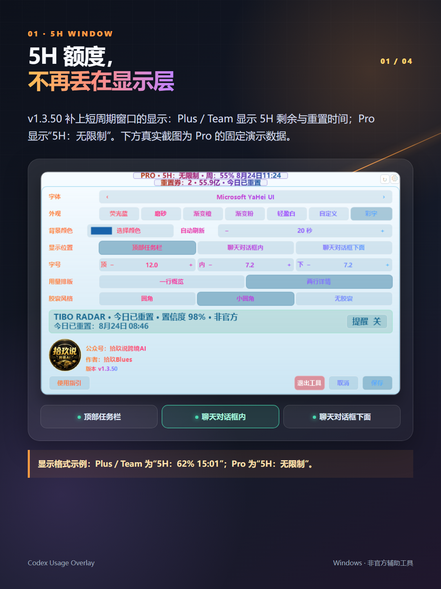
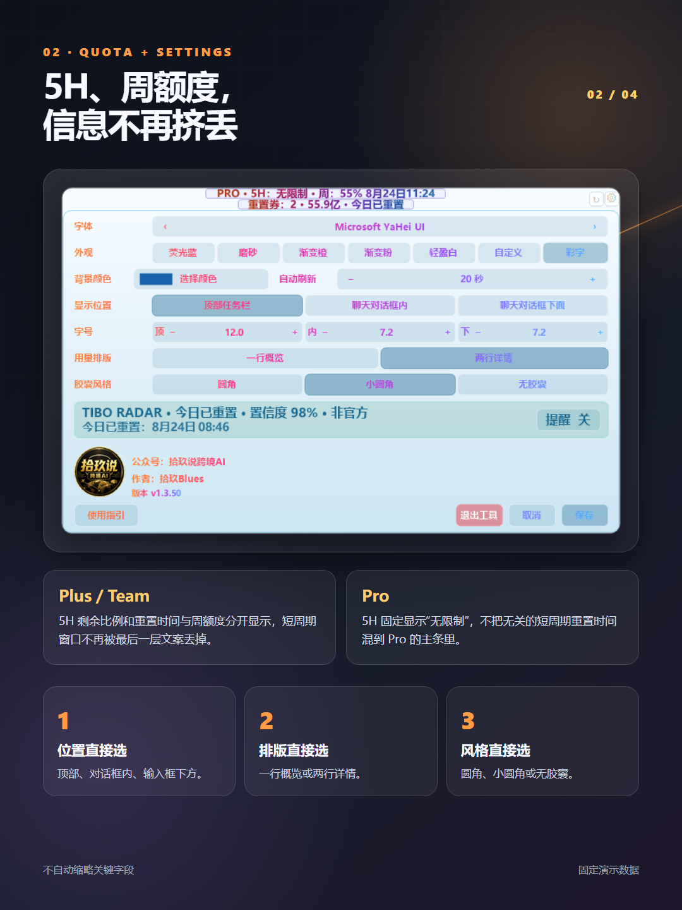
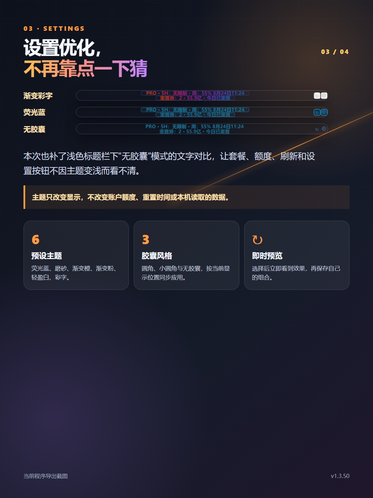
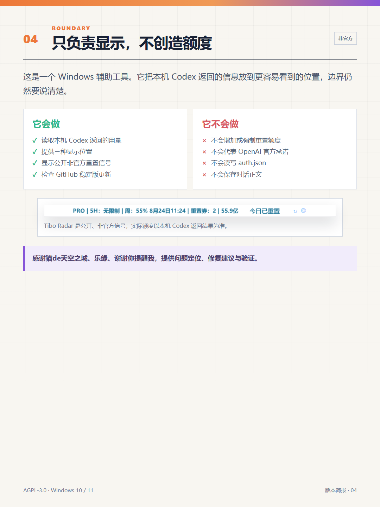

Codex 悬浮条更新：补上 5 小时额度，设置也重做了
v1.3.50 补上了 5 小时额度显示：Plus／Team 显示剩余比例与重置时间，Pro 明确显示“5H：无限制”；设置也改成直接选择。
朋友发来截图时，5 小时额度已经被 Codex 读到了，顶部悬浮条却只显示周额度。
问题不在账户，也不在 API，而是最后的显示层把短周期窗口丢掉了。对于 Plus／Team 用户，关键的 5H 剩余与重置时间恰好因此看不到。
这次 v1.3.50，我把这条链路补齐：Plus／Team 显示 5H 剩余比例和重置时间；Pro 显示“5H：无限制”。

5 小时额度，按套餐正确显示
Plus／Team 本机 Codex 返回短周期窗口时，主条会显示类似 `5H：62% 15:01` 的剩余比例和重置时间；周额度仍独立展示。
Pro 5 小时窗口不作为限制展示，因此主条固定显示 `5H：无限制`，不会再把短周期重置时间误带进来。
Business／其他工作区 本机没有返回额度窗口时，工具不会凭空补出百分比，仍以本机返回结果为准。
设置也不再靠“点一下看看”
显示位置 顶部任务栏、聊天对话框内、聊天对话框下面，三个按钮并列展示，当前选择会高亮。
用量排版 一行概览适合顶部任务栏；两行详情适合输入框附近。需要时把 5H、周额度、重置券和累计 Token 拆开看。
胶囊风格 圆角、小圆角矩形、无胶囊三个样式同样直接选择。设置面板与悬浮设置页保持相同的交互。

无胶囊，不等于看不清
显示逻辑补齐后，设置体验也顺手收拾了一遍：在浅色标题栏里，无胶囊文字以前可能显得太淡。
现在无胶囊模式会使用跟随主题但保持足够对比的文字颜色；套餐、额度、雷达状态、刷新与设置按钮都应该清楚可辨。这里的主题只影响显示，不会改变本机读取的数据。

它能做什么，不能做什么
这仍然是一个非官方 Windows 辅助工具。
账户套餐、额度、重置时间、重置券和累计 Token 通过本机 Codex 的 app-server 获取；工具不会直接读写 auth.json，不会保存对话正文，也不会把本机额度上传给 Tibo Radar。
Tibo Radar 只读取公开的非官方状态信号。它可以提示“今日已重置”“有预告”或“暂无信号”，但不代表每个账户会在同一时刻到账。它更不能增加额度、绕过限制或主动触发重置。

感谢猫de天空之城、乐缘、微信昵称“谢谢你提醒我”提供问题定位、修复建议与验证。
想换成适合自己的显示方式
v1.3.50 已发布 Windows 安装包、SHA-256 校验文件和当前截图。需要更新时，直接运行新版安装包即可覆盖，已有设置会保留。
https://github.com/ivan51769/CodexUsageOverlay/releases/tag/v1.3.50
本文基于 v1.3.50 源码、GitHub Release 与当前程序导出截图整理，使用 AI 辅助编辑与排版，功能、图片和事实结论由作者人工复核。